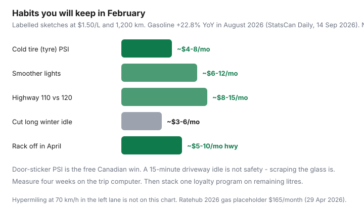

Transportation · Fuel habits
Fuel-efficient driving habits that work in Canadian conditions (without hypermiling extremes)
Online fuel advice is either a US city-MPG list or a hypermiler who never uses the heater. Canadians will not coast in neutral on the 401, and they will not sit in a frozen Civic for ten minutes to save 40¢. What they will do is set tire pressure when the temperature drops, stop racing to red lights, and take the rack off in April. Statistics Canada’s 14 Sep 2026 Daily put August gasoline +22.8% YoY (all-items CPI +3.0%). The litre is loud. The habits below are quiet and repeatable.
Cut kilometres first: errand batching. Then spend remaining litres with a loyalty stack. Winter rubber: budget winter tires.
Disclosure: Gas-rewards cards are an opportunity type. Tire-pressure gauges are not a forced affiliate. Saving Optimizer may earn a commission if we later add partner links. We do not currently claim issuer or retailer partnerships.
Key takeaways
- Cold-weather tire (tyre) pressure is the biggest free win. Check monthly from October to April, cold, to the door sticker.
- Smooth acceleration and reading the next light beat hypermiling theatre.
- Highway 110 vs 120 is a real fuel trade for a real few minutes. You choose.
- Winter idle: clear the glass, then drive gently. Do not heat the driveway for 15 minutes.
- Measure with a four-week trip-computer log. Combine with one loyalty stack — not five apps you will abandon.
Tire pressure in cold weather — the biggest free win
A rule of thumb mechanics actually use: roughly 1 PSI per 5°C of temperature drop, give or take the tire. A vehicle set to 35 PSI in a 15°C garage can read low-20s on a −20°C morning if nobody has touched it since Thanksgiving. Low pressure = more rolling resistance, more heat, more wear, worse winter braking. This is not a hypermiling trick. It is the door sticker.
- Set pressure cold — before the drive, or after the car has sat three hours.
- Use the driver-door placard, not the sidewall max.
- Winter tires have their own spec; still the placard unless the tire maker says otherwise.
- A $15 gauge you keep in the glovebox beats the gas-station hose you do not trust.
Labelled sketch (same family as the no-hybrid guide): bringing four soft tires to spec on a 1,200 km month at $1.50/L is often a few dollars to high-single-digits a month — plus a tire you do not replace a season early. Small. Free. Repeatable.
Smooth acceleration and anticipating lights
Canadian commuting is lights, streetcars, and someone turning left from the wrong lane. The waste is the jackrabbit to 60 and the brake into the red. Look two lights ahead. Lift early. Keep a gap so you are not the person who stops from 50 for a light that is about to turn. You do not need to draft a transport truck. You need fewer 0–60–0 cycles per 10 km.
Highway speed vs time trade-offs
Drag rises roughly with the square of speed. 120 km/h vs 110 on a long 401 or Highway 1 run is noticeable on the trip computer. Our labelled sketch in the companion gas guide puts the monthly fuel difference in the $8–$15 area for a mixed 1,200 km driver — not a scientific coast-down. Time: 100 km at 110 vs 120 is about 4.5 minutes. If you value the minutes, pay the litres. If you do not, the right lane is not a moral failure.
Do not camp in the passing lane at 108 km/h and call it efficiency. That is how you collect road rage, not points.
Idle reduction in winter without damaging comfort
| Situation | Reasonable | Waste |
|---|---|---|
| −5°C, clear glass | Start, 30–60 seconds, drive gently | Remote-start 10 minutes for a 6 km hop |
| −20°C, iced windshield | Idle while you scrape; heat on defrost; then go | Idle 15 minutes from the kitchen window |
| School pickup line | If the lot allows, shut off over a few minutes | Thirty idling Civics for a 4:02 bell |
| Hybrid / auto stop-start | Let it work; keep the battery healthy | Override it all winter “to be safe” |
Modern oil circulates quickly. The expensive Canadian ritual is heating an empty cabin from the house. Block heaters (where you have a plug) keep the engine closer to happy without a 20-minute idle — common on the Prairies, underused in southern Ontario driveways that have outlets.

Roof racks and dead weight removal
An empty roof box in July is a wind tax you forgot. Remove racks and boxes when you are not carrying skis or lumber. Dead weight in the trunk (that case of water, the unused stroller) is a smaller tax, but it is not zero on a crossover that already drinks. Winter: snow in the box is both weight and a reminder to take the box off.
Measuring with the trip computer over four weeks
- Note today’s odometer, tank litres, and average L/100 km.
- Pick two habits (PSI + lights, or PSI + idle). Not seven.
- For four weeks, one fill-up log: litres, kilometres, weather note (a −25°C week will look worse — that is physics).
- Compare to the previous four. If L/100 km did not move, the leftover waste is kilometres — go back to batching.
Ratehub’s 2026 gas line is $165/month on the blended TCO (29 Apr 2026), with a mid-April spike note near $231 at $1.749/L. Your log is the budget. The national average is the chalkboard.
Combine with loyalty stacks for larger wins
Habits cut litres. Loyalty cuts cents. Do not drive 8 km to save 6¢/L — the two-store grocery guide already used 73¢/km as a ceiling on that nonsense. One stack you will actually swipe: PC Optimum at Esso/Mobil or Shell Go+ / Scene+ after the 26 May 2026 nationwide Scene+ launch. A 3¢ effective stack on 160 L is $4.80. Four deleted loops can beat that. The household that does both stops arguing about brands.
Habit rule: door-sticker PSI every cold snap, fewer 0–60–0 cycles, rack off when empty, four-week log. If a tip requires a special funnel or a 70 km/h highway run, skip it.
Sources & date stamps
- Statistics Canada, The Daily, 14 Sep 2026 — August gasoline +22.8% YoY; −0.9% MoM; all-items +3.0%.
- Ratehub 2026 TCO (29 Apr 2026) — $165 gas placeholder; mid-April $1.749/L note.
- Milesopedia gas-station points tutorials — loyalty stack context; confirm live earn rates.
- Companion Saving Optimizer gas-habits sketches (trip chaining, PSI, 110 vs 120) — labelled, not a dyno test.
Frequently asked questions
Does tire pressure really matter in a Canadian winter?
Yes. Air density drops with temperature; a tire set in a 15°C garage can sit several PSI low at −15°C. Low pressure raises rolling resistance and wear. Set PSI cold to the door-sticker spec — not the sidewall maximum. This is the free habit. Hypermiling at 70 km/h in the left lane is not.
Should I idle to warm up the car in winter?
A short idle to get oil moving and the windows clear is comfort and safety. A 15-minute driveway idle is a litre you can measure. Remote-start culture is the expensive Canadian default. Drive gently for the first few kilometres instead of idling the block.
Is 110 km/h cheaper than 120 on the 401?
Usually, on fuel. Aerodynamic drag rises quickly with speed. A labelled sketch of $8–$15/month on a 1,200 km mix is in the same family as our no-hybrid gas guide. Time cost is yours. Do not sit in the left lane at 105 and call it virtue.
How do I measure whether habits worked?
Reset the trip computer or log litres and kilometres for four weeks. Compare to the previous four. One fill-up is weather. Four weeks is a habit. Ignore forum screenshots from a different season.
Should I combine this with gas loyalty?
Yes — after you cut litres. PC Optimum at Esso/Mobil, Petro-Points, and Shell Go+ / Scene+ are cents on the remaining tank. A 3¢ stack on 160 L is $4.80. Deleting a weekly extra loop can be larger. Do both.